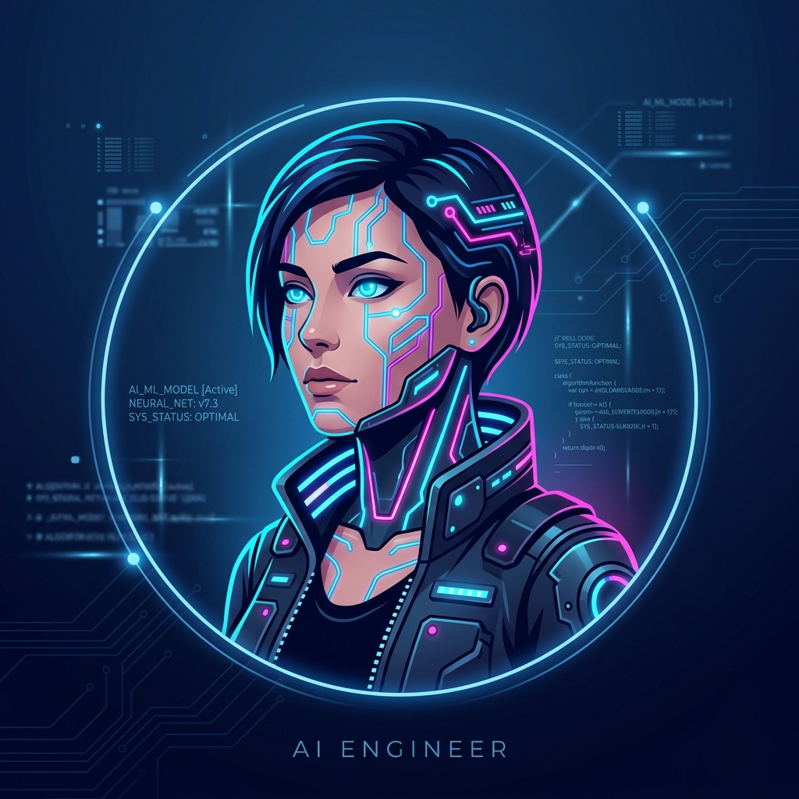

Software and AI/ML Engineer with a B.Tech in Artificial Intelligence and Data Science. Experienced in developing and deploying Python-based machine learning solutions, healthcare ERP AI engines, constraint-based scheduling algorithms, speech processing pipelines, predictive analytics, and production systems.

Enterprise AI healthcare ERP engines, constraint scheduling algorithms, predictive analytics, mobile NLP applications, and computer vision systems.
Arya Vaidya Chikitsalayam & Research Institute (AVCRI) AI-driven healthcare ERP system, integrating machine learning, constraint-based therapist scheduling, patient demand prediction, forecasting, clinical workflows, and real-time operational analytics.
Developed a cross-platform mobile AI application featuring a React Native frontend and Flask microservice backend. Integrated NLP deep learning models (BERT & LSTM) with Groq API for real-time responses, model parameter tuning, chat history management, and robust API workflows.
Built an end-to-end data classification solution analyzing survey data. Applied Logistic Regression and Support Vector Machines (SVM) with automated Pandas data validation pipelines to output reliable mental health risk indicator scores.
Created a real-time computer vision system for touchless human-computer interaction. Implemented multi-hand landmark tracking using MediaPipe & OpenCV to map custom recognized gestures directly to operating system commands.
Tools, frameworks, and methodologies I specialize in across AI, software engineering, healthcare analytics, and data science.
My professional trajectory in software engineering, healthcare ERP AI systems, voice machine learning pipelines, and academic achievements.
Issued by Coursera
Specialized Visualization & Analytics
Neural Architectures & Transformers